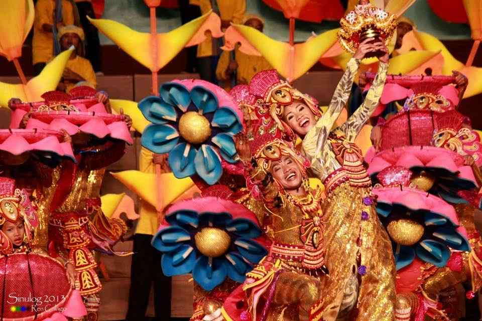

Kabankalan holds its Sinulog in January, during the third week of the month, and for 2027 the date most people will plan around is Sunday, 17 January. That is the third Sunday of the month, the slot the festival usually takes. It is a planning date for now, though, because the city has not yet released the 2027 programme. The opening events, the Sinulog Queen pageant and the tribal competitions can each fall on a different day.
This is the festival's first edition after its 50th celebration in 2026. In November 2026 the city government and the Kabankalan Sinulog Foundation were already talking about the next one and getting in touch early with the tribes that will take part. So the festival is going ahead. What visitors still need to see is the calendar.
Below is what Sinulog de Kabankalan is, which events deserve your time, how to reach a city in the far south of Negros Occidental, where to sleep and how to keep a festival day from turning into a long wait for a bus home.

What Sinulog de Kabankalan Is
Sinulog de Kabankalan, also known as Sinulog sa Kabankalan, is a religious and cultural festival in honour of the Señor Santo Niño. The Kabankalan Sinulog Foundation runs it with the city government. Each year it brings together a search for the Sinulog Queen, Masses and devotions, and the part most visitors come for: tribal groups from barangays and schools performing in costume to their own music.
The name may make you think of Cebu, and the two festivals honour the same Santo Niño, but they work differently. Kabankalan's is much smaller and run by the people who live there. The tribes come from the city's own neighbourhoods and campuses, and each one builds its performance around a story told through choreography, props and costume design. If you have seen the Cebu City parade and want to compare, our guide to what has been confirmed for Sinulog 2027 in Cebu covers that festival's own plans.
Sinulog de Kabankalan 2027 at a Glance
Sinulog de Kabankalan 2027 at a glance
- Where: Kabankalan City, southern Negros Occidental
- When: the third week of January; Sunday, 17 January 2027 is the customary date, still unconfirmed
- In honour of: the Señor Santo Niño
- Organisers: the Kabankalan Sinulog Foundation and the city government
- Main draws: tribal street dancing, the arena competition and the Sinulog Queen pageant
- Nearest airport: Bacolod-Silay, then about 90 to 100 km by road
The Events Worth Planning Around
Tribal street dancing
This is when you get closest to the performers. Contingents dance through the streets in matching costumes, each with its own music. To take pictures, stand where you can watch a group coming toward you, a little away from the most crowded stretch, and keep behind the barriers. A phone held out over the route is in the way of both the dancers and the marshals.
Tribal arena competition
If you can only make one event, make it this one. The tribes perform their complete routines in a dedicated venue, with the full choreography, production design and a central theme, and you can watch every group from one seat without trying to follow a moving parade. Ten local tribes took part in the parade and arena competition at the golden-anniversary edition in 2026. The 2027 line-up will be announced by the organisers.
The Sinulog Queen
The pageant is held every year. Each candidate represents her community and takes part in segments that include festival-inspired attire. It often falls on a different night from the dance competition. Wait for the official calendar before you plan a trip around both.
The religious side
Behind the music and costumes, this is a feast for the Santo Niño, and the Masses and devotions are a much quieter part of the week. Check the parish for Mass times and any procession. Treat a service as a service, not something to photograph, and keep your voice and movement low inside the church.
Where Kabankalan Is and How to Get There
Kabankalan sits in the south of Negros Occidental and is one of the main towns on that side of the province. It is roughly 90 to 100 kilometres south of Bacolod. Roads also connect it east toward Mabinay in Negros Oriental, which means you can come in from either side of the island.
Starting in Bacolod
Ceres bus south
Catch a southbound bus at the Bacolod South Bus Terminal and check that Kabankalan is on its route. Allow two to three hours, plus extra on festival days.
Flying in
Bacolod-Silay Airport
The airport is in Silay, north of Bacolod. Transfer into the city first, then head south by bus, private car or a pre-booked transfer.
Starting in Dumaguete
Across the island via Mabinay
The trip is around 100 km. Ask at the terminal for the right bus or transfer, and check the road before you leave in wet weather.
Driving yourself. Follow the main highway south from Bacolod through Bago and Himamaylan. The drive is easy enough. The slow part comes in town on festival days, when streets near the venues may be closed or rerouted.
Crossing by sea. Travellers on Cebu island can go overland to Toledo City, take the ferry to San Carlos City in Negros Occidental and then continue by road toward Kabankalan. The other option is to fly to Bacolod and take a bus south. Compare the total time and cost of both, and confirm ferry schedules and fares with the operator before you go. From Iloilo, a ferry or fast craft to Bacolod followed by the southbound bus is the simplest route.
Whichever way you come, avoid a tight connection on the day of the main competition. Getting through the airport, crossing Bacolod and riding two to three hours south takes most of a day, so arriving the evening before is the safer choice.
Where to Stay: Kabankalan or Bacolod?
Stay in Kabankalan if the festival is the reason you are going. You will be close to the venues, you won't face a long ride home after an evening event and you can change plans easily if the schedule moves. Rooms near the city centre also keep restaurants and transport within reach.
The catch is that it is a small city with nowhere near Bacolod's number of rooms, and festival week brings in performers and staff as well as visitors. Book as soon as you can. Before you pay, ask the property how far it is from the venue or parade area, whether it has parking, whether you can check in late, whether anything changes during festival week and whether the rate quoted includes taxes.
Bacolod has more hotels and restaurants, and it makes sense if Sinulog is one stop on a longer Negros trip and you have your own car or a reliable transfer. For the evening events it is a poor base, since you face the drive back north through festival traffic after dark.
What to Eat While You Are There
Kabankalan has the everyday places a provincial city runs on: carinderias, bakeries and small local food businesses, with temporary stalls appearing near the event areas during the festival. Most of what Negros Occidental is known for is easy to find.
Napoleones, the custard-filled layered pastry, comes from Bacolod rather than Kabankalan, so don't expect to find it everywhere in the south.
A Simple One-Day Plan
This plan assumes the arena competition falls on the day you visit. Move things around once the real schedule is out.
- MorningSettle in
Breakfast, then check the city's page for the day's announcements and any road closures. Walk to the venue or viewing area so you know the way.
- MiddayEat early
Have lunch at a carinderia before the crowds build, then find your spot for the street dancing.
- AfternoonThe arena
Move to the arena competition if it is scheduled that day. Get there with time to spare.
- EveningStalls, then home
Dinner, a walk past the food stalls, and a ride back that you arranged earlier in the day.
When the parade and the arena competition are held on different days, a two-night stay covers both without rushing. One full day is enough if you only want the competition.
Practical Tips Before You Go
Festival-day habits
- Don't trust last year's routeThe parade route, arena venue and road closures can change from year to year. Check the 2027 layout when it is released.
- Lock in your ride homeBefore an evening event, confirm the last bus or van. If you are staying out of town, book the return trip in advance.
- Carry small cashATMs get long queues and can run dry over a busy weekend. Bring small bills and coins, and no more than the day needs.
- Dress for sun and showersJanuary is mostly dry, but rain still comes. Bring water, a cap, sunscreen, a light rain jacket and shoes you can stand in for hours.
- Keep valuables in frontUse a crossbody bag or a small backpack worn on the chest, and keep your phone out of your back pocket in the crowd.
- Ask about ticketsSome events may have tickets or reserved seats. The official announcements will say which ones are free.
Budgeting for the Trip
Costs depend mostly on where you start and where you sleep. Plan for transport (flights or ferry, buses, fuel and parking), your room with taxes and any festival-week surcharge, meals and snacks, tricycle rides around town, any ticketed events and a contingency for delays. Groups who share a room and take public transport will spend the least, and booking late during festival week will cost you the most.
Adding More of Negros to Your Trip
Kabankalan sits between Bacolod and the Negros Oriental side of the island, so an extra day or two opens up more options. Himamaylan is just to the north on the same highway. Inland, Mabinay's caves and countryside deserve a separate day rather than a quick detour. Farther south, Sipalay's beaches need at least one night. Our Sipalay and Danjugan Island guide covers the beach side. Keep the main festival day free of side trips, because the performances run for hours and road closures make short excursions hard to fit in.
Is It Worth the Trip?
It is if you like local festivals more than big spectacles. Sinulog de Kabankalan doesn't have the crowds or the tourist services of the country's best-known festivals, but the performers are from the city itself and the competition is the high point of their year. Book your room early, wait for the official programme before you fix your dates, and plan to spend most of the main day at the arena.
Frequently Asked Questions
When is Sinulog de Kabankalan 2027?
It takes place in the third week of January. Sunday, 17 January 2027 is the customary date, but individual events can fall on other days, so wait for the City Government of Kabankalan or the Kabankalan Sinulog Foundation to publish the programme.
How do I get to Kabankalan from Bacolod?
Take a southbound Ceres bus from the Bacolod South Bus Terminal, hire a vehicle or drive. The 90 to 100 km trip usually takes two to three hours, and longer during the festival.
How many days should I stay?
One day is enough for a single event if your transport is arranged. Two days let you see the parade, the competition and the city at an easier pace.
Is there an entrance fee?
That depends on the event and the venue. Check the 2027 announcements for tickets and reserved seating rather than assuming everything is free.
Before you go, follow the City Government of Kabankalan page for the 2027 schedule, traffic advisories and venue updates.

Comments
No comments yet. Been here recently? Share a tip or ask a question.
Leave a Reply